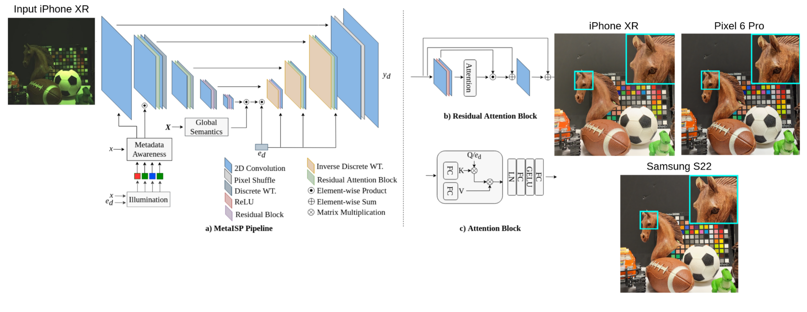

MetaISP – Exploiting Global Scene Structure for Accurate Multi-Device Color Rendition
Matheus Souza, Wolfgang Heidrich
VMV, 2023

Abstract
Image signal processors (ISPs) are historically grown legacy software systems for reconstructing color images from noisy
raw sensor measurements. Each smartphone manufacturer has developed its ISPs with its own characteristic heuristics for
improving the color rendition, for example, skin tones and other visually essential colors. The recent interest in replacing the
historically grown ISP systems with deep-learned pipelines to match DSLR’s image quality improves structural features in the
image. However, these works ignore the superior color processing based on semantic scene analysis that distinguishes mobile
phone ISPs from DSLRs. Here, we present MetaISP, a single model designed to learn how to translate between the color and
local contrast characteristics of different devices. MetaISP takes the RAW image from device A as input and translates it to RGB
images that inherit the appearance characteristics of devices A, B, and C. We achieve this result by employing a lightweight
deep learning technique that conditions its output appearance based on the device of interest. In this approach, we leverage
novel attention mechanisms inspired by cross-covariance to learn global scene semantics. Additionally, we use the metadata
that typically accompanies RAW images and estimate scene illuminants when they are unavailable.
Content
Paper [MetaISP]
Supplementary [MetaISP Supplementary]
Code [Github Repo]
Dataset [Monitor and Real-World]